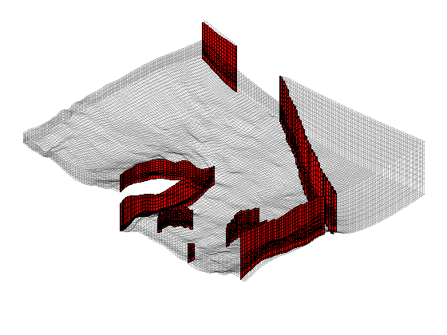
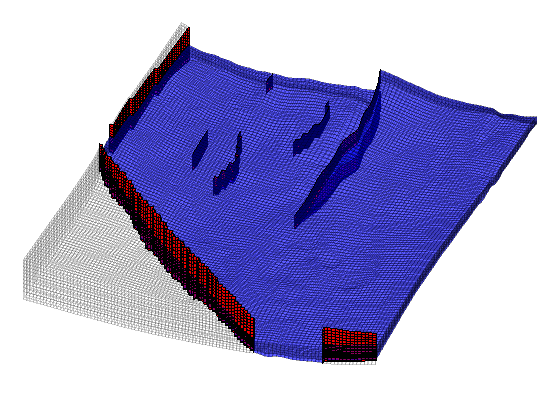
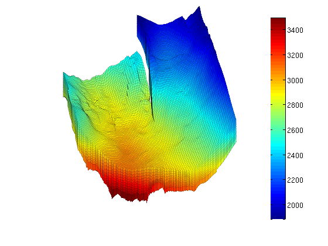
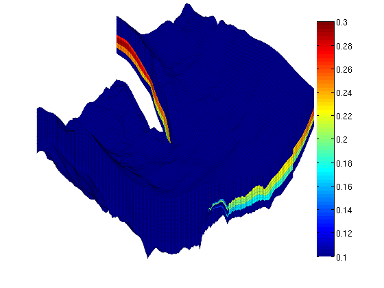
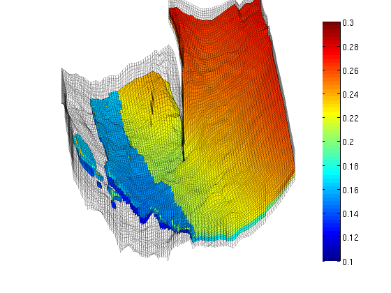
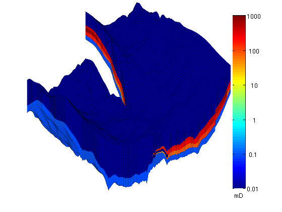
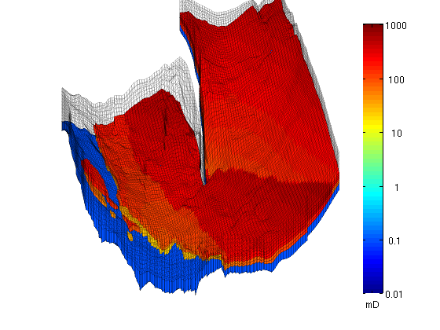
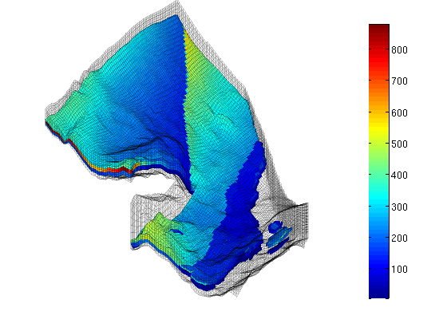
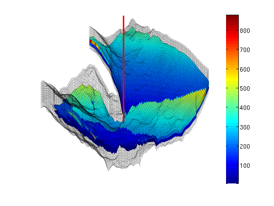

Visualizing the Johansen Data Set
The Johansen formation is a candidate site for large-scale CO2 storage offshore the south-west coast of Norway. The MatMoRA project has developed a set of geological models based on available seismic and well data. Herein, we will inspect one instance of the model in more detail.
Contents
Faults and active/inactive cells
We start by reading the model from a file in the Eclipse format (GRDECL), picking the sector model with five vertical layers in the Johansen formation and with five shale layers above and one below.
The file contains both active and inactive cells. We take the chance that the inactive cells do not contain garbage and visualize the whole model, marking with red color all faults found during processing.
clear % Load grid geometry - you will most likely have to change the path, % depending upon where you have stored the Johansen data-set sector = fullfile(ROOTDIR, 'examples', 'data', 'johansen', 'NPD5'); filename = [sector, '.grdecl']; if ~exist(filename, 'file'), error('Johansen data set not found'); end grdecl = readGRDECL(filename); clear filename actnum = grdecl.ACTNUM; grdecl.ACTNUM = ones(prod(grdecl.cartDims),1); G = processGRDECL(grdecl, 'checkgrid', false);
Plot the results
clf, subplot('position',[0.025 0.025 0.95 0.95]); plotGrid(G,'FaceColor','none','EdgeAlpha',0.1); plotFaces(G,find(G.faces.tag>0),'FaceColor','r'); axis tight off; view(-145,60);
Next we mark the active part of the model
plotGrid(G,find(actnum(G.cells.indexMap)), ... 'FaceColor', 'b', 'FaceAlpha', 0.4, 'EdgeAlpha', 0.1); view(20,75);
Height map
It is only meaningful to show a height map of the active cells. Therefore, to inspect only the active model, we reset the ACTNUM field to its original values and recreate the grid. Now, inactive cells will be ignored and we therefore get a different unstructured grid.
grdecl.ACTNUM = actnum; clear actnum; G = processGRDECL(grdecl); clear grdecl; G = computeGeometry(G); % Plotting a height map of the field using the z-component of the centroids % of the cells clf, plotCellData(G,G.cells.centroids(:,3),'EdgeColor','k','EdgeAlpha',0.1); colorbar, view(3), axis tight off, view(-20,40), zoom(1.2)
Porosity
The porosity data are given with one value for each cell in the model. We read all values and then pick only the values corresponding to active cells in the model.
clf p = reshape(load([sector, '_Porosity.txt'])', prod(G.cartDims), []); rock.poro = p(G.cells.indexMap); clear p hp = plotCellData(G,rock.poro,'EdgeColor','k','EdgeAlpha',0.1); colorbar; caxis([0.1 0.3]), view(-45,15), axis tight off, zoom(1.2)
From the plot, it seems like the formation has been pinched out and only contains the shale layers in the front part of the model. We verify this by plotting a filtered porosity field in which all values smaller than or equal 0.1 have been taken out.
delete(hp), view(-15,40) plotGrid(G,'FaceColor','none','EdgeAlpha',0.1); plotCellData(G,rock.poro, find(rock.poro>0.1), ... 'EdgeColor','k','EdgeAlpha',0.1);
Permeability
The permeability is given as a scalar field (Kx) similarly as the porosity. The tensor is given as K = diag(Kx, Kx, 0.1Kx) and we therefore only plot the x-component, Kx, using a logarithmic color scale.
clf K = reshape(load([sector, '_Permeability.txt']')', prod(G.cartDims), []); rock.perm = bsxfun(@times, [1 1 0.1], K(G.cells.indexMap)).*milli*darcy; clear K; hp = plotCellData(G,log10(rock.perm(:,1)),'EdgeColor','k','EdgeAlpha',0.1); view(-45,15), axis tight off, zoom(1.2) % Manipulate the colorbar to get the ticks we want h = colorbar; cs = [0.01 0.1 1 10 100 1000]; caxis(log10([min(cs) max(cs)]*milli*darcy)); set(h, 'XTick', 0.5, 'XTickLabel','mD', ... 'YTick', log10(cs*milli*darcy), 'YTickLabel', num2str(cs'));
To show more of the permeability structure, we strip away the shale layers, starting with the layers with lowest permeability on top.
delete(hp), view(-20,35) plotGrid(G,'FaceColor','none','EdgeAlpha',0.1); hp = plotCellData(G,log10(rock.perm(:,1)), ... find(rock.perm(:,1)>0.01*milli*darcy), ... 'EdgeColor','k', 'EdgeAlpha', 0.1);
Then we also take away the lower shale layer and plot the permeability using a linear color scale.
delete(hp); hp = plotCellData(G, convertTo(rock.perm(:,1), milli*darcy), ... find(rock.perm(:,1)>0.1*milli*darcy), ... 'EdgeColor','k', 'EdgeAlpha', 0.1); caxis auto; colorbar, view(-150,50)
Well
Finally, we read the well data and plot the injection well at the correct position.
w = load([sector, '_Well.txt']); W = verticalWell([], G, rock, w(1,1), w(1,2), w(1,3):w(1,4), ... 'Radius', 0.1, 'name', 'I'); plotWell(G,W,'height',1000,'color','r'); zoom out